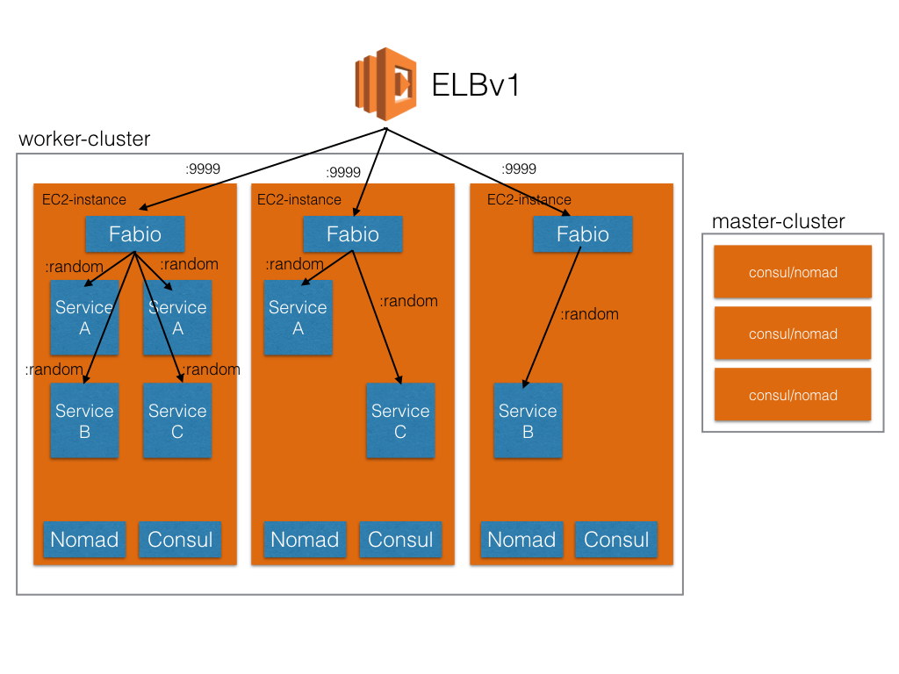

Nomad
A distributed, high available, datacenter-aware cluster manager/scheduler
Daniel Gerlach@2016
Nomad reference architecture

Advantages
- consul integration
- nomad (de)registers services
- zero-downtime deployments
- dynamic ports support
- service accessible outside of consul cluster via fabio
- not limited to docker (raw executables, jvm, rkt)
- multi-region/datacenter support
- complete open-source (Mozilla Public Licence 2.0)
Advantages
- powerful CLI
- log access
- inspecting cluster, job state
- scriptable
- declarative job definition under version control
- periodic batch jobs
- distributed cron
- utilize multiple machines
- operationally simple (single golang-binary)
Deployments
- canary deployment
- blue-green deployment
- fine-grained route weighting
- 10% experimental, 90% stable
- deployment strategy configurable
- step-by-step rollout
- how many instances in parallel
Disadvantages
- not available as a service
- strong contenders available: e.g. kubernetes
- more mature
- more features
- bigger community
- all-in-one-package
- scheduler
- distributed K/V
- service discovery
- secret and configuration management
- available as a service in GCP or Azure